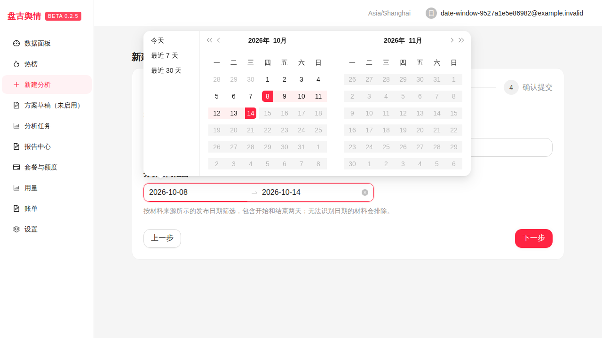

盘古舆情 · 2026-10-14 · 新建分析、公开网页检索及报告时间范围补全
日历通过现有 date_from／date_to 字段提交。查询引擎将闭合范围转换为博查 freshness 参数，单日使用 YYYY-MM-DD，其他范围使用 YYYY-MM-DD..YYYY-MM-DD。
返回材料还会按来源所示发布日期再次筛选，并在去重和截取数量之前排除超出范围或日期无法识别的材料。话题、维度分析与报告使用这批材料，并收到明确的时间范围；材料提及的过往事件只可作为标明的历史背景。
范围内搜索结果仍是本次返回的公开网页摘要，不代表该时间段的全部内容。材料不足时沿用失败与额度回补规则。历史未限定日期的任务保留原有参数和报告。
工作分支：work/analysis-date-range-20261014；已验收提交：5b2ff9e4963361f0e55b0df172fc146d596e8e41。
对应源提交的 7 个作业全部成功：Go 测试／vet／二进制构建、前端 lint／build、PostgreSQL、Python、实际计量桥接、浏览器验收及最终归档。157 项 Python 检查和 56 项浏览器检查通过，日历默认范围、自选日期提交与持久化、手机端弹层及清空范围阻止提交均通过。未合并生产分支或部署到生产站点。
以下截图来自隔离的 GitHub 浏览器验收环境，账号为 example.invalid 测试账号。
桌面日历截图 · 手机日历截图 · 源提交与截图校验记录

所有编译、依赖准备和浏览器执行均在规定的 GitHub 托管工作流完成。本地仅编辑、轻量语法检查、格式化与产物校验。接口和模型响应使用离线契约材料，本次未调用真实博查或真实模型供应商。